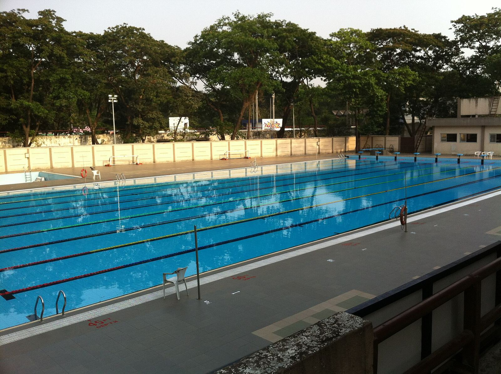

Welcome to Student Wellness at IIT Bombay
Counselling, care and skills for every student, from everyday wellbeing to round-the-clock crisis support.
How can we care for you today?
Prof. Deepak Marla, Associate Dean of Student Wellness · A strong foundation · Decisive action · Clear next steps
Find the right support
Choose what fits how you're feeling right now. Every path leads to a real person.
I need help right now
24/7 crisis support, a psychiatrist on campus day and night, and emergency numbers.
Get help nowI'd like to talk to someone
Book a confidential one-to-one session, walk in, or talk online.
Ways to get helpI'm feeling stressed
Stress Management, Emotional Fitness and more from the Flourishing Hub.
Explore workshopsI'm worried about a friend
Signs to look out for, what to say, and who to bring in.
Support a friendI'm falling behind
Backlogs, a loss, or a long illness? SHINE gives you one case owner and room to recover.
About SHINEI want to build life skills
Courses in wellbeing, mentorship and leadership, built into your degree.
CoursesI want to move and breathe
Yoga, meditation and mindfulness with Yogastha and the Flourishing Hub.
Yoga & mindfulnessI want to help others
Become a Wellbeing Ambassador or a student mentor in your hostel or department.
Get involvedSupport for every student, at every moment
Prevention, support and care now work as one coordinated system under a single office.

For every studentFlourish
Build resilience and wellbeing before problems arise.
Flourishing Hub · Yogastha · NSS For those who need help
For those who need helpSupport
Friendly faces close to you, in your hostel and department.
Mentors · Ambassadors · Counsellors For those in crisis
For those in crisisCare
Professional clinical care, any hour of the day or night.
SWC · Psychiatry · HospitalsFlourishing Hub workshops in the inaugural year
first-year students in the NOCS wellness courses
counsellors, outreach counsellors and a clinical psychologist at SWC
psychiatrist available at the IIT Bombay Hospital

Confidential care, on campus and online
A dedicated team of counsellors, a clinical psychologist and outreach counsellors offers one-to-one counselling, group sessions and crisis support to every student.
Drop in
Walk-in counselling on weekdays and on weekends.
Talk online
Online counselling through the Talk to Angel platform.
Decisive action, already under way
Four measures completed or in progress this year.
24/7 psychiatry at the IIT Bombay Hospital
A psychiatrist is now available round the clock on campus.
Hostel & Department Wellbeing Ambassadors
Trained students in every hostel and department, promoting wellbeing on the ground.
SHINE Committee
A structured, case-by-case pathway for students who need sustained support.
Peer Circles with Faculty Advisors
Mentor-anchored circles nested under each Faculty Advisor.
Five priorities for the earliest action
From a strong foundation to a complete, round-the-clock system of care.
Quick Response Team
A 24/7 team, its own vehicle and one number
2RISE IITB app
One app, and screening for every student
3Longer hours
Counselling till 10 pm and at weekends
4Local counsellors
One counsellor for every hostel and department
5Dedicated leadership
A Chief Wellness Officer and a Deputy Registrar
“Every IIT Bombay student should know where to turn, and help should reach them at any hour: early, in their own hostel and department, and from people who know them.”
Our commitment · October 2026 update
Prof. Deepak Marla
Associate Dean of Student Wellness, IIT Bombay. Prof. Marla leads the Office of the Associate Dean, Student Wellness, created in September 2026 to bring every part of student wellbeing under one roof.
- Provides overall leadership for the Students Wellness Centre, Flourishing Hub, Yogastha, NSS and the Student Mentorship Program
- Works with the Institute Wellbeing Ambassadors
- Author of the October 2026 update: current status, ongoing plans and future goals
Where to go
Students Wellness Centre
Counselling, clinical care and 24/7 crisis support. Booking, timings and contact details are on the SWC website.
swc.iitb.ac.inIIT Bombay Hospital
A psychiatrist is available day and night, so no student in acute distress has to wait until morning.
About 24/7 psychiatryFlourishing Hub
Workshops, courses, retreats and Alumni Connect for every student.
flourishing-iitb.org